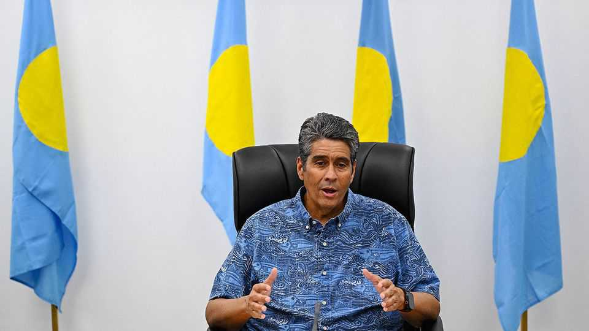

The Pacific Islands Forum fizzles as China flexes its muscles
Leaders stay away over debates about Taiwan’s presence

Sep 3rd 2026
A QUIRK OF the Pacific Islands Forum (PIF), an 18-member regional group, is the dress code at its leaders’ meetings. Hawaiian shirts are almost de rigueur. At this week’s meeting from August 30th to September 1st they were worn by both Pacific island leaders and by senior diplomats from America, Europe and the rest of Asia.
A less whimsical quirk is that three PIF members have diplomatic relations with Taiwan rather than China. When one of them plays host at their annual get-together, it offers the rare spectacle of Taiwan’s most senior diplomat, Lin Chia-lung, gladhanding and holding press conferences just like a regular foreign minister.

This year the leaders met in Palau, one of only 11 countries to recognise Taiwan. China’s outrage was inevitable. But how far it went to disrupt proceedings was still a surprise. Last-minute withdrawals by five leaders were a serious blow. PIF decisions are taken by consensus and only leaders can make important ones.
Suspicion quickly fell on China. Surangel Whipps, Palau’s president and a longtime critic of China’s attempts to buy influence in strategically important Pacific island states, told reporters that, weeks earlier, China had threatened unnamed consequences if Palau invited Taiwan.
The biggest no-show was Matthew Wale, the Solomon Islands’ prime minister since mid-May. The outgoing chair of the PIF, Mr Wale has been lobbying the forum to agree on a new treaty that would make it tougher for China to establish a military or police presence in PIF countries. But on the eve of the summit, three members of his cabinet resigned and filed a motion of no-confidence against him. Mr Wale rushed back to quell the parliamentary revolt. That left his proposed treaty without a champion in Palau.
Diplomats in Honiara, the capital of the Solomon Islands, say that they often see the Chinese ambassador hosting members of parliament for dinners, especially after Mr Wale became prime minister. One says that Chinese diplomats and state-owned enterprises frequently dole out cash to legislators to get them to back more China-friendly policies. But they could cite no hard evidence that the timing of the ministers’ defections was influenced by China in this case.
Some of the absences might have other explanations. Not all of the leaders are in rude health, and some are preoccupied by domestic politics. But one truant, Taneti Maamau, Kiribati’s president, threw subtlety to the wind by sending in his place his country’s former ambassador to China. All of this irked Taiwan’s Mr Lin, who told reporters that China was like a guest who behaves like a host, making demands and “ruining the atmosphere” of the party. ■
For exclusive coverage of Asian politics, economics and security, sign up to Asia Bulletin, our weekly subscriber-only newsletter.